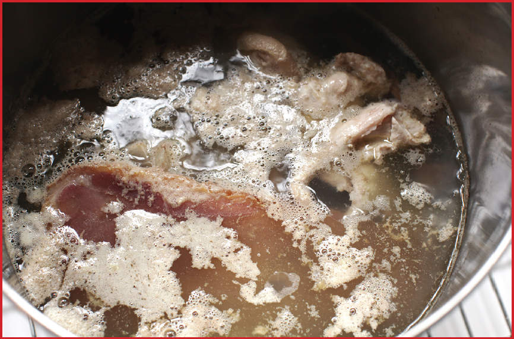
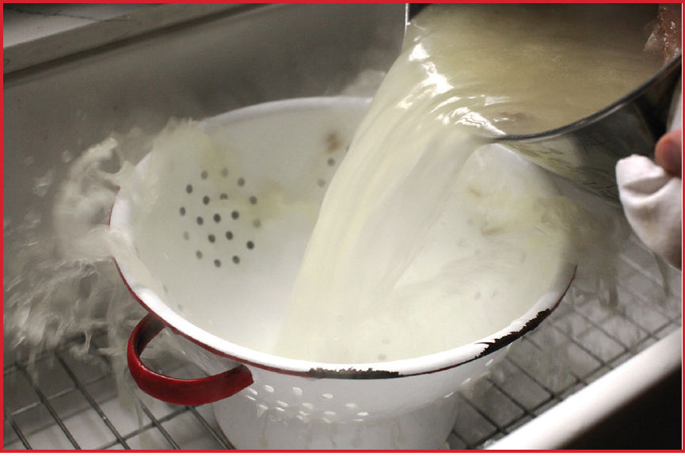
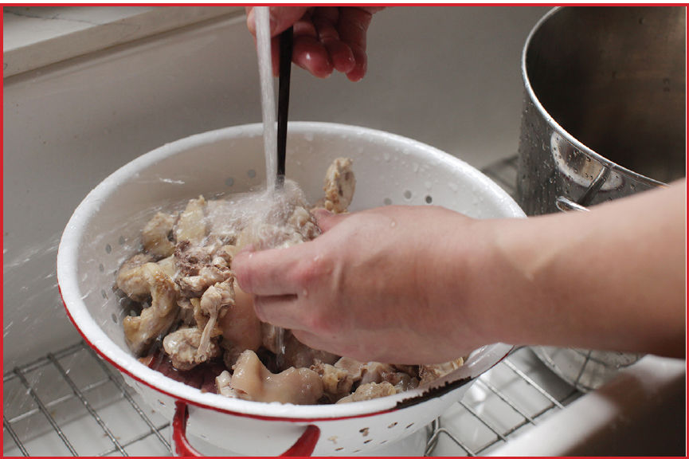

SUPERIOR STOCK
|
Yield Makes about 2 quarts |
Active Time 15 minutes Total Time 3½ hours |
Kombu is giant sea kelp. It can be found at most Asian grocers. Yellow chives can be found at Chinese grocers. Dried shrimp or stockfish (dried flounder) can be found at Chinese or other Asian supermarkets. You can omit them. If cooking a recipe that includes shrimp, save the shrimp shells and add them to the stock during simmering.
As with all stocks, this one freezes and defrosts very well, especially if you freeze it flat in quart- or gallon-size zipper-lock bags and use an aluminum baking sheet for faster defrosting (see here for how to freeze things flat and thaw food rapidly). You can also freeze it in ice-cube trays, pop the frozen stock cubes out, then store them in a zipper-lock freezer bag. Each cube is about an ounce of stock and defrosts quickly on the countertop (or even faster in the microwave).
This stock is essential for the very best wonton soup. It has an intensely savory flavor that is suitable for any number of brothy soups.
INGREDIENTS
2 pounds (900 g) chicken backs, wing tips, and/or bones, roughly chopped with a cleaver
1½ pounds (680 g) pig’s trotters, split or sliced
3 ounces (90 g) Chinese Jinhua ham, American country ham, or prosciutto or Serrano scraps
½ ounce (15 g) kombu (approximate 4- by 6-inch piece; see Notes)
1 ounce (30 g) dried shrimp or stockfish (optional; see Notes)
4 scallions, roughly chopped
One 4-inch knob (about 1½ ounces/45 g) fresh ginger, sliced
4 Napa cabbage leaves
DIRECTIONS
1 Combine the chicken, pork trotters, and ham in a large wok or stockpot and cover with water. Bring to a boil over high heat. Boil for 10 minutes, then dump the contents into a colander in the sink and let the liquid drain. Clean the bones and meat under cold running water, rubbing off any scum or blood clots that may appear and using a skewer or chopsticks to clean out any bits of soft coagulated material stuck in crevices in the bones.
2 Return the washed bones and ham to the stockpot or wok. Add the kombu, dried shrimp or stockfish (if using), scallions, ginger, and cabbage leaves. Bring to a boil over high heat, reduce to a bare simmer, and cook, uncovered, until the broth is deeply flavorful, about 3 hours.
3 Using tongs, discard the bones from broth. Strain through a fine-mesh strainer into a large saucepan. Defat the broth with a ladle if using the same day (alternatively, cool and refrigerate the stock overnight and skim the solid fat off the top the next day). Allow the stock to cool to room temperature, then transfer it to sealed containers and store in the fridge for up to a week or in the freezer indefinitely (see Notes).
FOR CLARITY’S SAKE: The Importance of Blanching and Scrubbing Large Cut Bones
Oftentimes, stock recipes that include ingredients like pork trotters or large cut beef or veal bones will recommend blanching and scrubbing the bones before making your stock. When working on my wonton soup recipe, I noticed that my finished broths were brown and very cloudy if I skipped this step. This is due to the clotted blood, proteins, and other impurities that are leached out of cut bones during the first few minutes of the simmering process. Blanching the bones briefly in boiling water, then dumping the water, scrubbing the bones, and starting with fresh water will give you a clearer broth with a cleaner flavor.
Don’t believe me? Here’s what you’re trying to get rid of:

Not pretty, right?
The easiest way to do it is to cover your bones with water, bring them to a simmer, then dump everything directly into a large colander in the sink. Then rub the bones all over under cold running water, using your fingertips or a chopstick to get out all of the bits of gunk that are caught in their crevices.*


When you add the fresh water and bring it up to a simmer again, the only stuff that floats to the surface is fat and a small amount of clean, white flotsam. Some folks like to go a step further and meticulously skim away this fat and scum, but I’ve found that so long as you get rid of the gunky stuff that coagulates within the first fifteen minutes or so, you actually end up with better flavor if you don’t skim your broth until after straining it.
*It’s actually strangely satisfying, like those Dr. Pimple Popper videos on YouTube.